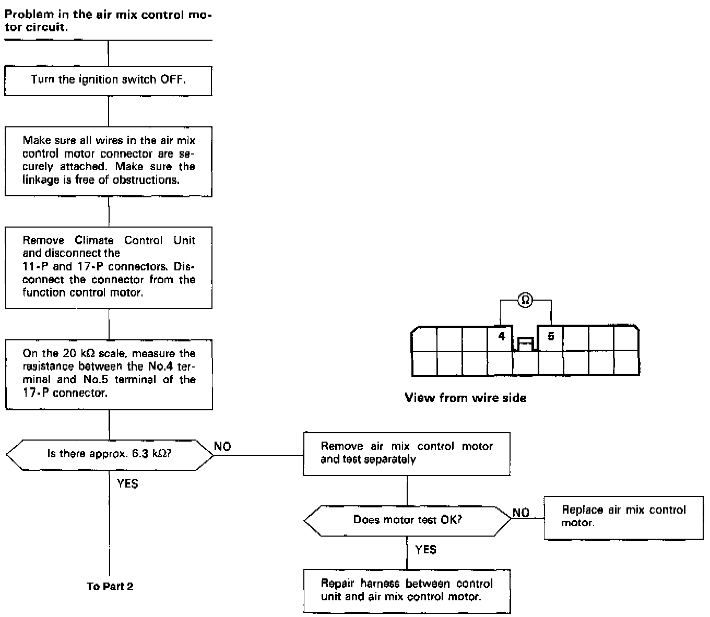
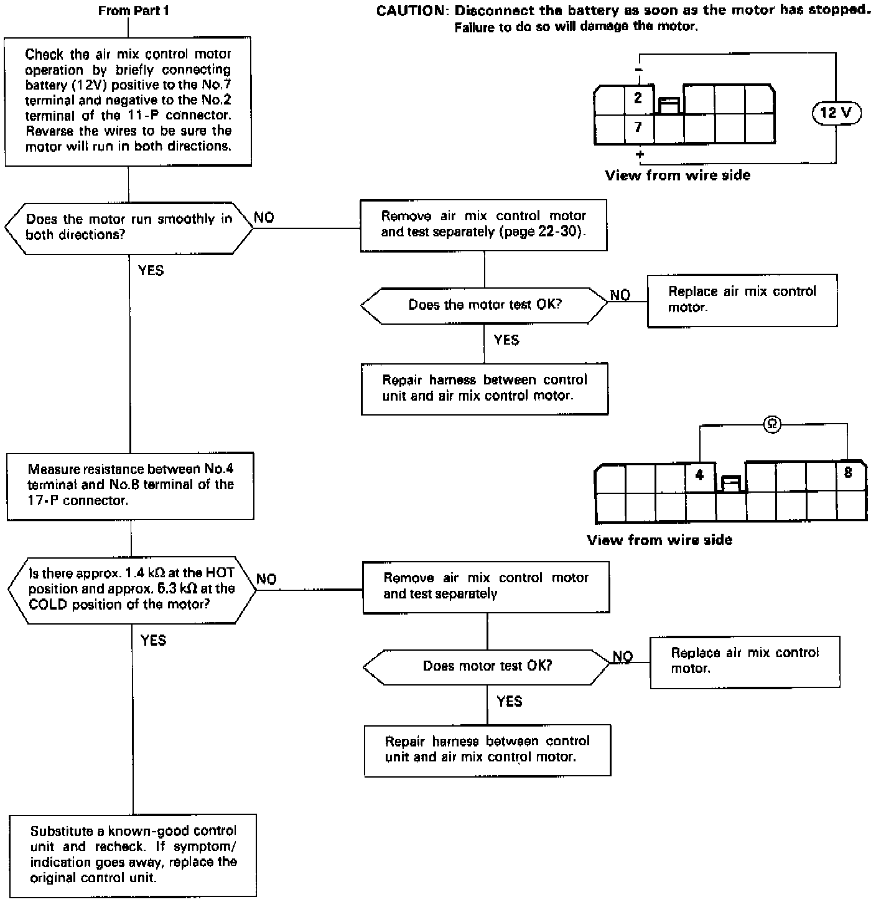

Troubleshooting Flowcharts
Air Mix Control MotorSelf-diagnosis indicator light C comes on: Indicates a problem in the Air Mix Control Motor circuit.
The air mix control motor regulates the mixture of fresh/recirculated air according to output from the control unit.

